Summary
This experiment investigates wifi channel & power. Fractional factorial of 5 WiFi AP parameters for throughput and coverage.
The design varies 5 factors: channel width (MHz), ranging from 20 to 80, tx power (dBm), ranging from 10 to 23, guard interval, ranging from short to long, beamforming, ranging from off to on, and spatial streams (count), ranging from 1 to 4. The goal is to optimize 2 responses: throughput mbps (Mbps) (maximize) and coverage m (m) (maximize). Fixed conditions held constant across all runs include standard = wifi6, band = 5GHz.
A fractional factorial design reduces the number of runs from 32 to 8 by deliberately confounding higher-order interactions. This is ideal for screening — identifying which of the 5 factors matter most before investing in a full study.
Key Findings
For throughput mbps, the most influential factors were channel width (55.0%), tx power (18.5%), beamforming (18.5%). The best observed value was 949.0 (at channel width = 20, tx power = 10, guard interval = long).
For coverage m, the most influential factors were spatial streams (49.5%), guard interval (18.9%), beamforming (18.9%). The best observed value was 34.0 (at channel width = 20, tx power = 10, guard interval = long).
Recommended Next Steps
- Follow up with a response surface design (CCD or Box-Behnken) on the top 3–4 factors to model curvature and find the true optimum.
- Consider whether any fixed factors should be varied in a future study.
- The screening results can guide factor reduction — drop factors contributing less than 5% and re-run with a smaller, more focused design.
Experimental Setup
Factors
| Factor | Low | High | Unit |
|---|
channel_width | 20 | 80 | MHz |
tx_power | 10 | 23 | dBm |
guard_interval | short | long | |
beamforming | off | on | |
spatial_streams | 1 | 4 | count |
Fixed: standard = wifi6, band = 5GHz
Responses
| Response | Direction | Unit |
|---|
throughput_mbps | ↑ maximize | Mbps |
coverage_m | ↑ maximize | m |
Configuration
{
"metadata": {
"name": "WiFi Channel & Power",
"description": "Fractional factorial of 5 WiFi AP parameters for throughput and coverage"
},
"factors": [
{
"name": "channel_width",
"levels": [
"20",
"80"
],
"type": "continuous",
"unit": "MHz"
},
{
"name": "tx_power",
"levels": [
"10",
"23"
],
"type": "continuous",
"unit": "dBm"
},
{
"name": "guard_interval",
"levels": [
"short",
"long"
],
"type": "categorical",
"unit": ""
},
{
"name": "beamforming",
"levels": [
"off",
"on"
],
"type": "categorical",
"unit": ""
},
{
"name": "spatial_streams",
"levels": [
"1",
"4"
],
"type": "continuous",
"unit": "count"
}
],
"fixed_factors": {
"standard": "wifi6",
"band": "5GHz"
},
"responses": [
{
"name": "throughput_mbps",
"optimize": "maximize",
"unit": "Mbps"
},
{
"name": "coverage_m",
"optimize": "maximize",
"unit": "m"
}
],
"settings": {
"operation": "fractional_factorial",
"test_script": "use_cases/56_wifi_channel_power/sim.sh"
}
}
Experimental Matrix
The Fractional Factorial Design produces 8 runs. Each row is one experiment with specific factor settings.
| Run | channel_width | tx_power | guard_interval | beamforming | spatial_streams |
|---|
| 1 | 20 | 23 | long | off | 1 |
| 2 | 80 | 10 | short | off | 1 |
| 3 | 80 | 23 | short | on | 1 |
| 4 | 80 | 23 | long | on | 4 |
| 5 | 20 | 23 | short | off | 4 |
| 6 | 80 | 10 | long | off | 4 |
| 7 | 20 | 10 | short | on | 4 |
| 8 | 20 | 10 | long | on | 1 |
Step-by-Step Workflow
1
Preview the design
$ doe info --config use_cases/56_wifi_channel_power/config.json
2
Generate the runner script
$ doe generate --config use_cases/56_wifi_channel_power/config.json \
--output use_cases/56_wifi_channel_power/results/run.sh --seed 42
3
Execute the experiments
$ bash use_cases/56_wifi_channel_power/results/run.sh
4
Analyze results
$ doe analyze --config use_cases/56_wifi_channel_power/config.json
5
Get optimization recommendations
$ doe optimize --config use_cases/56_wifi_channel_power/config.json
6
Multi-objective optimization
With 2 competing responses, use --multi to find the best compromise via Derringer–Suich desirability.
$ doe optimize --config use_cases/56_wifi_channel_power/config.json --multi
7
Generate the HTML report
$ doe report --config use_cases/56_wifi_channel_power/config.json \
--output use_cases/56_wifi_channel_power/results/report.html
Features Exercised
| Feature | Value |
|---|
| Design type | fractional_factorial |
| Factor types | continuous (3), categorical (2) |
| Arg style | double-dash |
| Responses | 2 (throughput_mbps ↑, coverage_m ↑) |
| Total runs | 8 |
Analysis Results
Generated from actual experiment runs using the DOE Helper Tool.
Response: throughput_mbps
Top factors: channel_width (55.0%), tx_power (18.5%), beamforming (18.5%).
ANOVA
| Source | DF | SS | MS | F | p-value |
|---|
| Source | DF | SS | MS | F | p-value |
| channel_width | 1 | 312445.1250 | 312445.1250 | 10.321 | 0.0237 |
| tx_power | 1 | 35511.1250 | 35511.1250 | 1.173 | 0.3282 |
| guard_interval | 1 | 4851.1250 | 4851.1250 | 0.160 | 0.7055 |
| beamforming | 1 | 35511.1250 | 35511.1250 | 1.173 | 0.3282 |
| spatial_streams | 1 | 136.1250 | 136.1250 | 0.004 | 0.9491 |
| channel_width*tx_power | 1 | 35511.1250 | 35511.1250 | 1.173 | 0.3282 |
| channel_width*guard_interval | 1 | 136.1250 | 136.1250 | 0.004 | 0.9491 |
| channel_width*beamforming | 1 | 35511.1250 | 35511.1250 | 1.173 | 0.3282 |
| channel_width*spatial_streams | 1 | 4851.1250 | 4851.1250 | 0.160 | 0.7055 |
| tx_power*guard_interval | 1 | 4186.1250 | 4186.1250 | 0.138 | 0.7252 |
| tx_power*beamforming | 1 | 312445.1250 | 312445.1250 | 10.321 | 0.0237 |
| tx_power*spatial_streams | 1 | 128271.1250 | 128271.1250 | 4.237 | 0.0946 |
| guard_interval*beamforming | 1 | 128271.1250 | 128271.1250 | 4.237 | 0.0946 |
| guard_interval*spatial_streams | 1 | 312445.1250 | 312445.1250 | 10.321 | 0.0237 |
| beamforming*spatial_streams | 1 | 4186.1250 | 4186.1250 | 0.138 | 0.7252 |
| Error | (Lenth | PSE) | 5 | 151358.4375 | 30271.6875 |
| Total | 7 | 520911.8750 | 74415.9821 | | |
Pareto Chart

Main Effects Plot
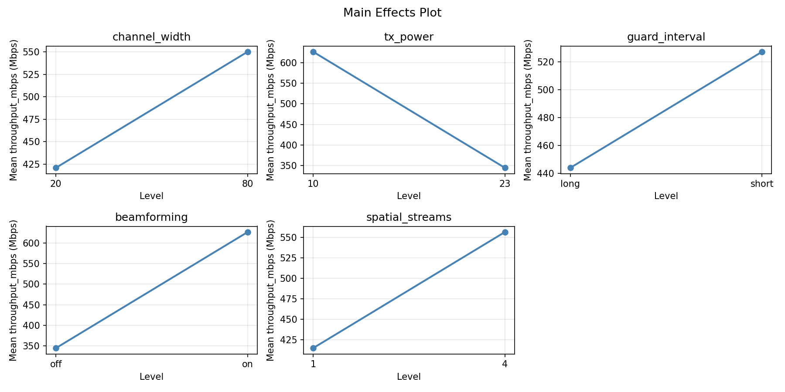
Normal Probability Plot of Effects
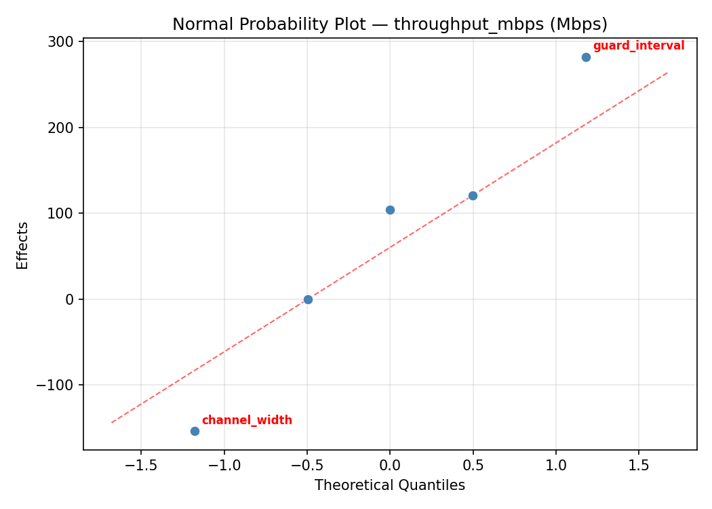
Half-Normal Plot of Effects
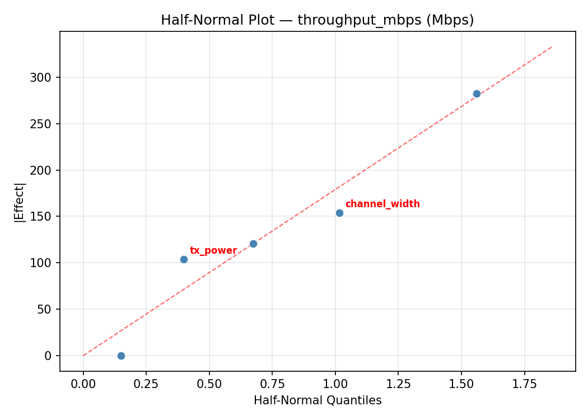
Model Diagnostics
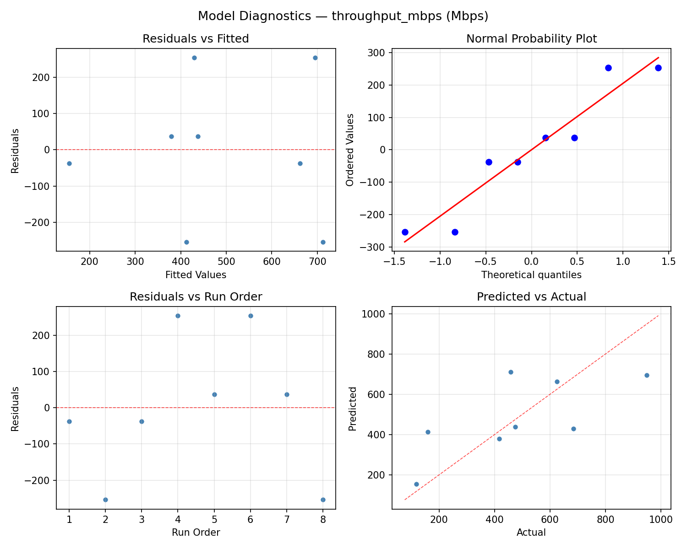
Response: coverage_m
Top factors: spatial_streams (49.5%), guard_interval (18.9%), beamforming (18.9%).
ANOVA
| Source | DF | SS | MS | F | p-value |
|---|
| Source | DF | SS | MS | F | p-value |
| channel_width | 1 | 1.1250 | 1.1250 | 0.050 | 0.8326 |
| tx_power | 1 | 15.1250 | 15.1250 | 0.667 | 0.4513 |
| guard_interval | 1 | 55.1250 | 55.1250 | 2.430 | 0.1798 |
| beamforming | 1 | 55.1250 | 55.1250 | 2.430 | 0.1798 |
| spatial_streams | 1 | 378.1250 | 378.1250 | 16.667 | 0.0095 |
| channel_width*tx_power | 1 | 55.1250 | 55.1250 | 2.430 | 0.1798 |
| channel_width*guard_interval | 1 | 378.1250 | 378.1250 | 16.667 | 0.0095 |
| channel_width*beamforming | 1 | 15.1250 | 15.1250 | 0.667 | 0.4513 |
| channel_width*spatial_streams | 1 | 55.1250 | 55.1250 | 2.430 | 0.1798 |
| tx_power*guard_interval | 1 | 190.1250 | 190.1250 | 8.380 | 0.0340 |
| tx_power*beamforming | 1 | 1.1250 | 1.1250 | 0.050 | 0.8326 |
| tx_power*spatial_streams | 1 | 15.1250 | 15.1250 | 0.667 | 0.4513 |
| guard_interval*beamforming | 1 | 15.1250 | 15.1250 | 0.667 | 0.4513 |
| guard_interval*spatial_streams | 1 | 1.1250 | 1.1250 | 0.050 | 0.8326 |
| beamforming*spatial_streams | 1 | 190.1250 | 190.1250 | 8.380 | 0.0340 |
| Error | (Lenth | PSE) | 5 | 113.4375 | 22.6875 |
| Total | 7 | 709.8750 | 101.4107 | | |
Pareto Chart
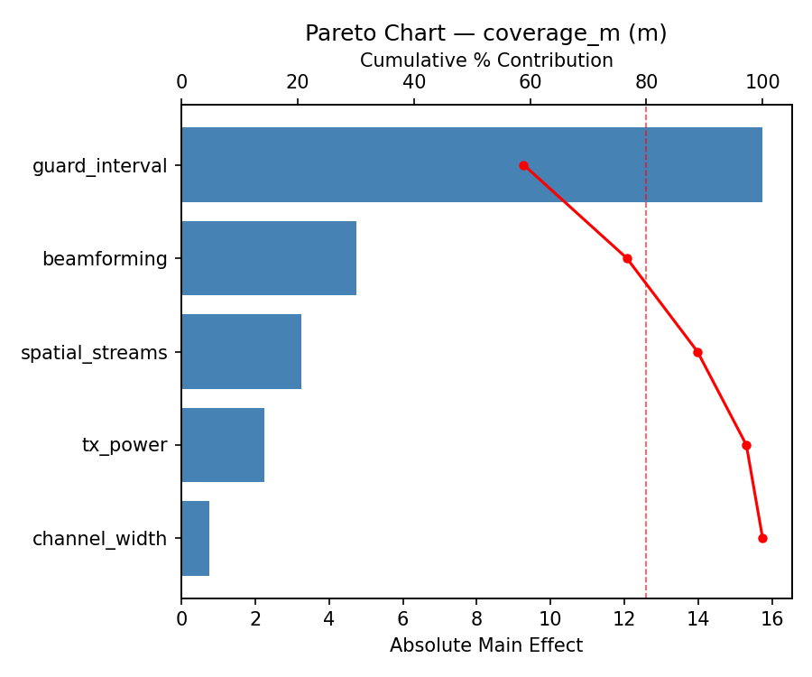
Main Effects Plot
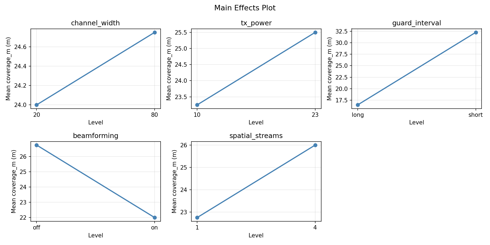
Normal Probability Plot of Effects
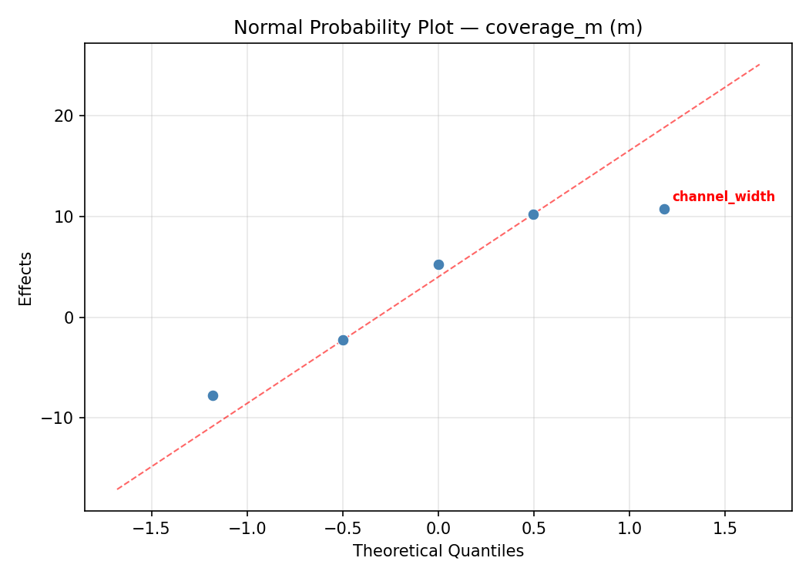
Half-Normal Plot of Effects
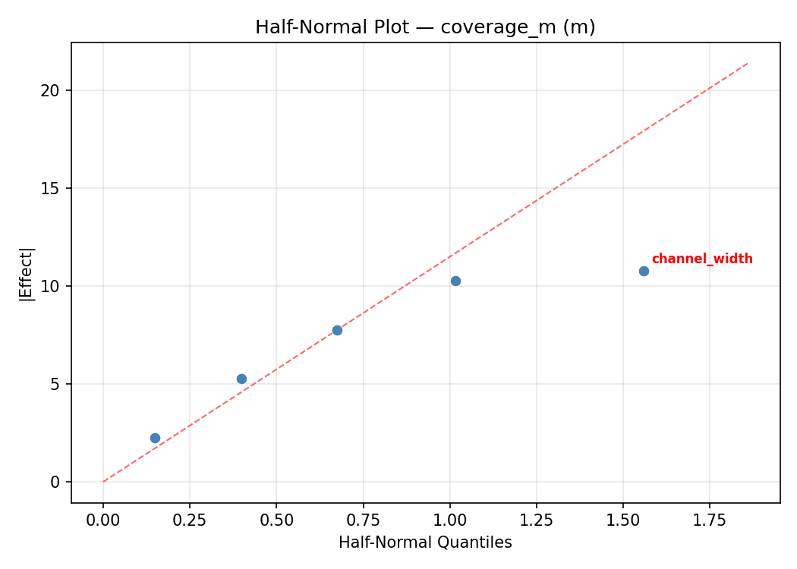
Model Diagnostics
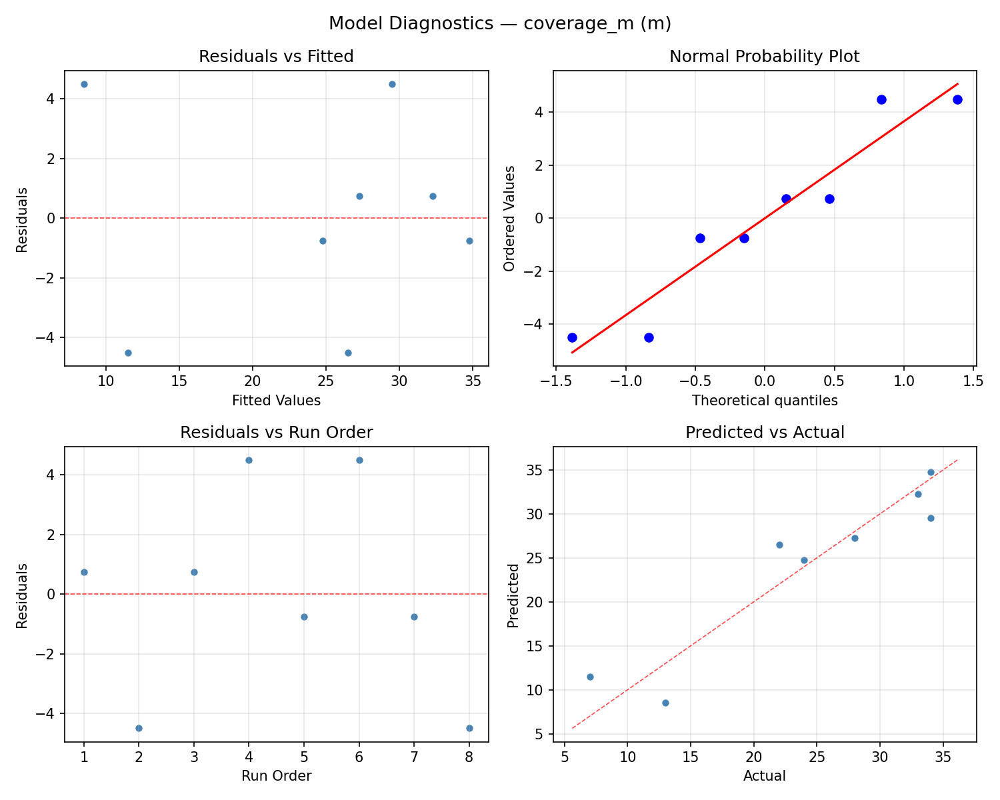
Response Surface Plots
3D surfaces fitted with quadratic RSM. Red dots are observed data points.
coverage m channel width vs spatial streams
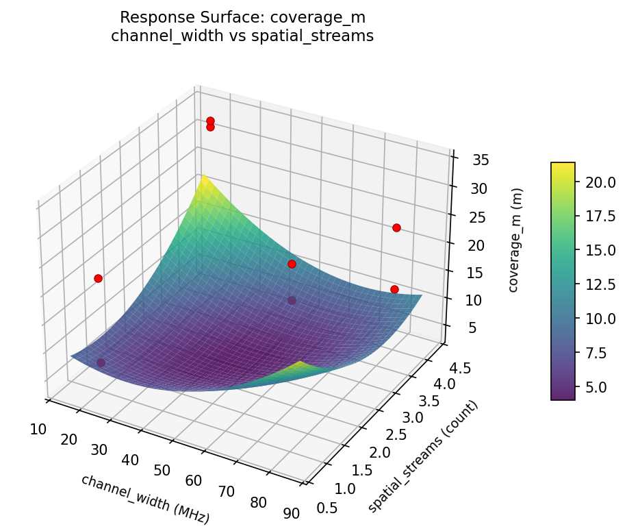
coverage m channel width vs tx power

coverage m tx power vs spatial streams
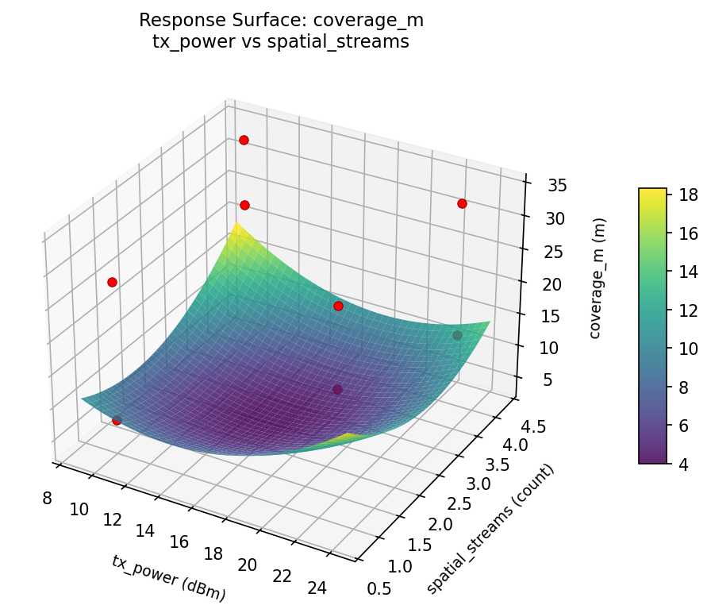
throughput mbps channel width vs spatial streams
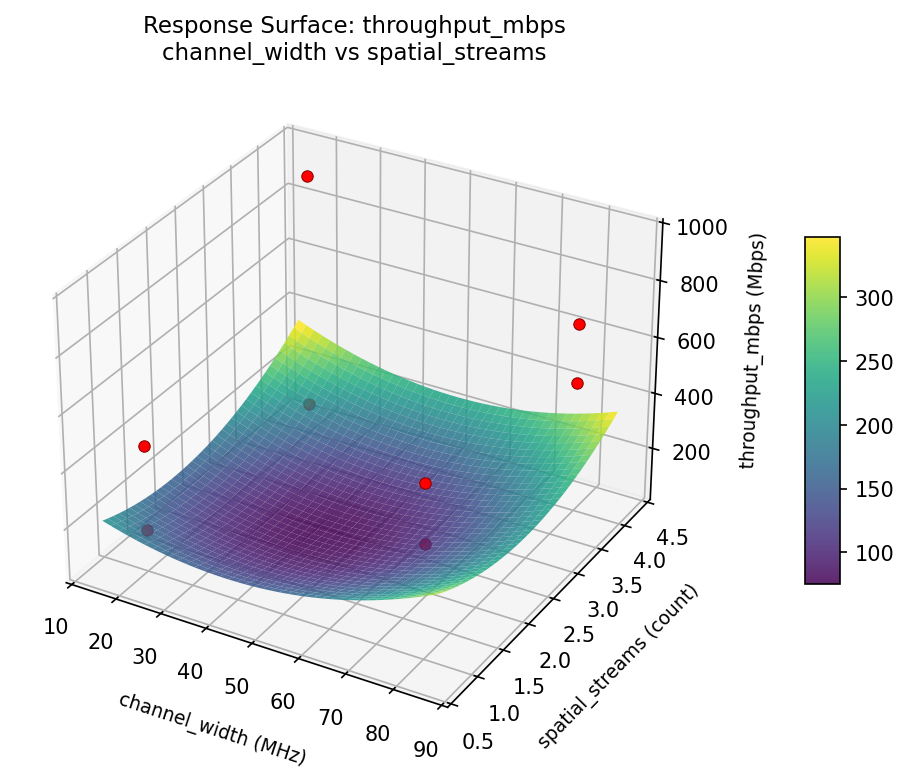
throughput mbps channel width vs tx power
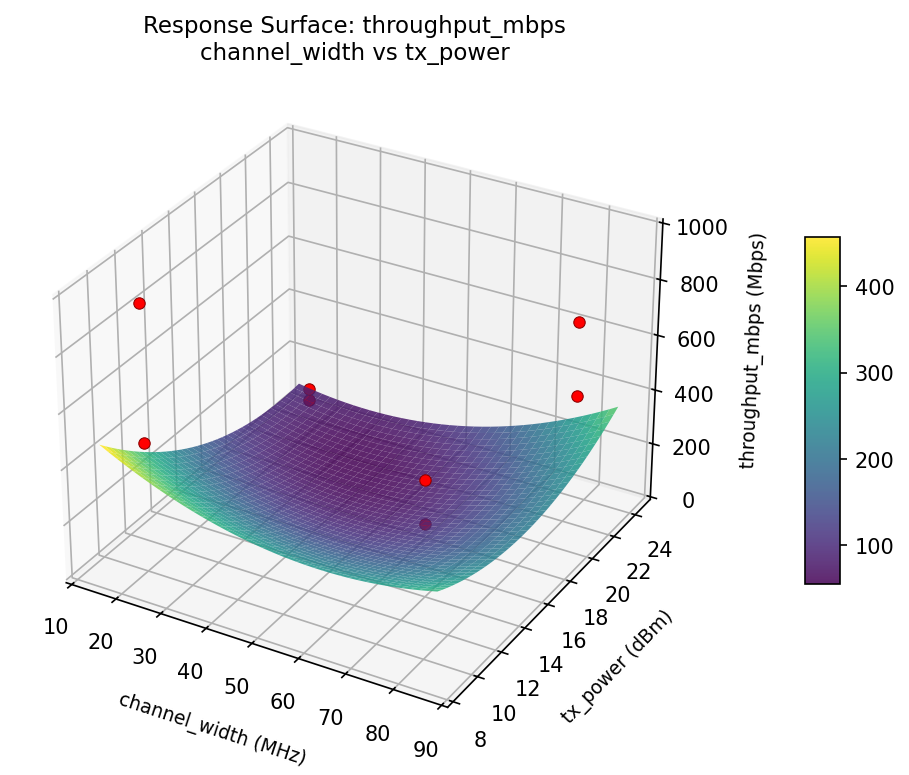
throughput mbps tx power vs spatial streams

Multi-Objective Optimization
When responses compete, Derringer–Suich desirability finds the best compromise.
Each response is scaled to a 0–1 desirability, then combined via a weighted geometric mean.
Overall Desirability
D = 0.9545
Per-Response Desirability
| Response | Weight | Desirability | Predicted | Dir |
|---|
throughput_mbps |
1.5 |
|
949.00 0.9545 949.00 Mbps |
↑ |
coverage_m |
1.0 |
|
34.00 0.9545 34.00 m |
↑ |
Recommended Settings
| Factor | Value |
|---|
channel_width | 80 MHz |
tx_power | 10 dBm |
guard_interval | short |
beamforming | off |
spatial_streams | 1 count |
Source: from observed run #4
Trade-off Summary
Sacrifice = how much worse than single-objective best.
| Response | Predicted | Best Observed | Sacrifice |
|---|
coverage_m | 34.00 | 34.00 | +0.00 |
Top 3 Runs by Desirability
| Run | D | Factor Settings |
|---|
| #3 | 0.6570 | channel_width=20, tx_power=10, guard_interval=short, beamforming=on, spatial_streams=4 |
| #5 | 0.5428 | channel_width=80, tx_power=23, guard_interval=short, beamforming=on, spatial_streams=1 |
Model Quality
| Response | R² | Type |
|---|
coverage_m | 0.8165 | linear |
Full Multi-Objective Output
============================================================
MULTI-OBJECTIVE OPTIMIZATION
Method: Derringer-Suich Desirability Function
============================================================
Overall desirability: D = 0.9545
Response Weight Desirability Predicted Direction
---------------------------------------------------------------------
throughput_mbps 1.5 0.9545 949.00 Mbps ↑
coverage_m 1.0 0.9545 34.00 m ↑
Recommended settings:
channel_width = 80 MHz
tx_power = 10 dBm
guard_interval = short
beamforming = off
spatial_streams = 1 count
(from observed run #4)
Trade-off summary:
throughput_mbps: 949.00 (best observed: 949.00, sacrifice: +0.00)
coverage_m: 34.00 (best observed: 34.00, sacrifice: +0.00)
Model quality:
throughput_mbps: R² = 0.3246 (linear)
coverage_m: R² = 0.8165 (linear)
Top 3 observed runs by overall desirability:
1. Run #4 (D=0.9545): channel_width=80, tx_power=10, guard_interval=short, beamforming=off, spatial_streams=1
2. Run #3 (D=0.6570): channel_width=20, tx_power=10, guard_interval=short, beamforming=on, spatial_streams=4
3. Run #5 (D=0.5428): channel_width=80, tx_power=23, guard_interval=short, beamforming=on, spatial_streams=1
Full Analysis Output
=== Main Effects: throughput_mbps ===
Factor Effect Std Error % Contribution
--------------------------------------------------------------
channel_width -395.2500 96.4469 55.0%
tx_power -133.2500 96.4469 18.5%
beamforming 133.2500 96.4469 18.5%
guard_interval 49.2500 96.4469 6.8%
spatial_streams 8.2500 96.4469 1.1%
=== ANOVA Table: throughput_mbps ===
Source DF SS MS F p-value
-----------------------------------------------------------------------------
channel_width 1 312445.1250 312445.1250 10.321 0.0237
tx_power 1 35511.1250 35511.1250 1.173 0.3282
guard_interval 1 4851.1250 4851.1250 0.160 0.7055
beamforming 1 35511.1250 35511.1250 1.173 0.3282
spatial_streams 1 136.1250 136.1250 0.004 0.9491
channel_width*tx_power 1 35511.1250 35511.1250 1.173 0.3282
channel_width*guard_interval 1 136.1250 136.1250 0.004 0.9491
channel_width*beamforming 1 35511.1250 35511.1250 1.173 0.3282
channel_width*spatial_streams 1 4851.1250 4851.1250 0.160 0.7055
tx_power*guard_interval 1 4186.1250 4186.1250 0.138 0.7252
tx_power*beamforming 1 312445.1250 312445.1250 10.321 0.0237
tx_power*spatial_streams 1 128271.1250 128271.1250 4.237 0.0946
guard_interval*beamforming 1 128271.1250 128271.1250 4.237 0.0946
guard_interval*spatial_streams 1 312445.1250 312445.1250 10.321 0.0237
beamforming*spatial_streams 1 4186.1250 4186.1250 0.138 0.7252
Error (Lenth PSE) 5 151358.4375 30271.6875
Total 7 520911.8750 74415.9821
Note: Error estimated using Lenth's pseudo-standard-error (unreplicated design)
=== Interaction Effects: throughput_mbps ===
Factor A Factor B Interaction % Contribution
------------------------------------------------------------------------
tx_power beamforming -395.2500 23.1%
guard_interval spatial_streams 395.2500 23.1%
tx_power spatial_streams -253.2500 14.8%
guard_interval beamforming 253.2500 14.8%
channel_width tx_power 133.2500 7.8%
channel_width beamforming -133.2500 7.8%
channel_width spatial_streams -49.2500 2.9%
tx_power guard_interval 45.7500 2.7%
beamforming spatial_streams -45.7500 2.7%
channel_width guard_interval -8.2500 0.5%
=== Summary Statistics: throughput_mbps ===
channel_width:
Level N Mean Std Min Max
------------------------------------------------------------
20 4 683.2500 197.8086 475.0000 949.0000
80 4 288.0000 174.2431 118.0000 458.0000
tx_power:
Level N Mean Std Min Max
------------------------------------------------------------
10 4 552.2500 340.4442 159.0000 949.0000
23 4 419.0000 214.2382 118.0000 625.0000
guard_interval:
Level N Mean Std Min Max
------------------------------------------------------------
long 4 461.0000 255.7408 118.0000 684.0000
short 4 510.2500 326.5225 159.0000 949.0000
beamforming:
Level N Mean Std Min Max
------------------------------------------------------------
off 4 419.0000 194.2301 159.0000 625.0000
on 4 552.2500 352.2427 118.0000 949.0000
spatial_streams:
Level N Mean Std Min Max
------------------------------------------------------------
1 4 481.5000 235.3416 159.0000 684.0000
4 4 489.7500 343.8114 118.0000 949.0000
=== Main Effects: coverage_m ===
Factor Effect Std Error % Contribution
--------------------------------------------------------------
spatial_streams 13.7500 3.5604 49.5%
guard_interval -5.2500 3.5604 18.9%
beamforming -5.2500 3.5604 18.9%
tx_power -2.7500 3.5604 9.9%
channel_width -0.7500 3.5604 2.7%
=== ANOVA Table: coverage_m ===
Source DF SS MS F p-value
-----------------------------------------------------------------------------
channel_width 1 1.1250 1.1250 0.050 0.8326
tx_power 1 15.1250 15.1250 0.667 0.4513
guard_interval 1 55.1250 55.1250 2.430 0.1798
beamforming 1 55.1250 55.1250 2.430 0.1798
spatial_streams 1 378.1250 378.1250 16.667 0.0095
channel_width*tx_power 1 55.1250 55.1250 2.430 0.1798
channel_width*guard_interval 1 378.1250 378.1250 16.667 0.0095
channel_width*beamforming 1 15.1250 15.1250 0.667 0.4513
channel_width*spatial_streams 1 55.1250 55.1250 2.430 0.1798
tx_power*guard_interval 1 190.1250 190.1250 8.380 0.0340
tx_power*beamforming 1 1.1250 1.1250 0.050 0.8326
tx_power*spatial_streams 1 15.1250 15.1250 0.667 0.4513
guard_interval*beamforming 1 15.1250 15.1250 0.667 0.4513
guard_interval*spatial_streams 1 1.1250 1.1250 0.050 0.8326
beamforming*spatial_streams 1 190.1250 190.1250 8.380 0.0340
Error (Lenth PSE) 5 113.4375 22.6875
Total 7 709.8750 101.4107
Note: Error estimated using Lenth's pseudo-standard-error (unreplicated design)
=== Interaction Effects: coverage_m ===
Factor A Factor B Interaction % Contribution
------------------------------------------------------------------------
channel_width guard_interval -13.7500 25.7%
tx_power guard_interval -9.7500 18.2%
beamforming spatial_streams 9.7500 18.2%
channel_width tx_power -5.2500 9.8%
channel_width spatial_streams 5.2500 9.8%
channel_width beamforming -2.7500 5.1%
tx_power spatial_streams -2.7500 5.1%
guard_interval beamforming 2.7500 5.1%
tx_power beamforming -0.7500 1.4%
guard_interval spatial_streams 0.7500 1.4%
=== Summary Statistics: coverage_m ===
channel_width:
Level N Mean Std Min Max
------------------------------------------------------------
20 4 24.7500 8.8459 13.0000 34.0000
80 4 24.0000 12.5698 7.0000 34.0000
tx_power:
Level N Mean Std Min Max
------------------------------------------------------------
10 4 25.7500 10.2103 13.0000 34.0000
23 4 23.0000 11.2842 7.0000 33.0000
guard_interval:
Level N Mean Std Min Max
------------------------------------------------------------
long 4 27.0000 9.6954 13.0000 34.0000
short 4 21.7500 11.1467 7.0000 34.0000
beamforming:
Level N Mean Std Min Max
------------------------------------------------------------
off 4 27.0000 5.2915 22.0000 34.0000
on 4 21.7500 13.7931 7.0000 34.0000
spatial_streams:
Level N Mean Std Min Max
------------------------------------------------------------
1 4 17.5000 9.3274 7.0000 28.0000
4 4 31.2500 4.8563 24.0000 34.0000
Optimization Recommendations
=== Optimization: throughput_mbps ===
Direction: maximize
Best observed run: #4
channel_width = 20
tx_power = 10
guard_interval = long
beamforming = on
spatial_streams = 1
Value: 949.0
RSM Model (linear, R² = 0.9225, Adj R² = 0.7288):
Coefficients:
intercept +485.6250
channel_width -126.6250
tx_power +22.8750
guard_interval -66.6250
beamforming +197.6250
spatial_streams -4.1250
Predicted optimum (from linear model, at observed points):
channel_width = 20
tx_power = 10
guard_interval = long
beamforming = on
spatial_streams = 1
Predicted value: 857.7500
Surface optimum (via L-BFGS-B, linear model):
channel_width = 20
tx_power = 23
guard_interval = short
beamforming = on
spatial_streams = 1
Predicted value: 903.5000
Model quality: Excellent fit — surface predictions are reliable.
Factor importance:
1. beamforming (effect: 395.2, contribution: 47.3%)
2. channel_width (effect: -253.2, contribution: 30.3%)
3. guard_interval (effect: -133.2, contribution: 15.9%)
4. tx_power (effect: 45.8, contribution: 5.5%)
5. spatial_streams (effect: -8.2, contribution: 1.0%)
=== Optimization: coverage_m ===
Direction: maximize
Best observed run: #4
channel_width = 20
tx_power = 10
guard_interval = long
beamforming = on
spatial_streams = 1
Value: 34.0
RSM Model (linear, R² = 0.8447, Adj R² = 0.4564):
Coefficients:
intercept +24.3750
channel_width -1.3750
tx_power -4.8750
guard_interval -1.3750
beamforming +0.3750
spatial_streams -6.8750
Predicted optimum (from linear model, at observed points):
channel_width = 20
tx_power = 10
guard_interval = long
beamforming = on
spatial_streams = 1
Predicted value: 39.2500
Surface optimum (via L-BFGS-B, linear model):
channel_width = 20
tx_power = 10
guard_interval = short
beamforming = on
spatial_streams = 1
Predicted value: 39.2500
Model quality: Good fit — general trends are captured, some noise remains.
Factor importance:
1. spatial_streams (effect: -13.8, contribution: 46.2%)
2. tx_power (effect: -9.8, contribution: 32.8%)
3. channel_width (effect: -2.8, contribution: 9.2%)
4. guard_interval (effect: -2.8, contribution: 9.2%)
5. beamforming (effect: 0.8, contribution: 2.5%)